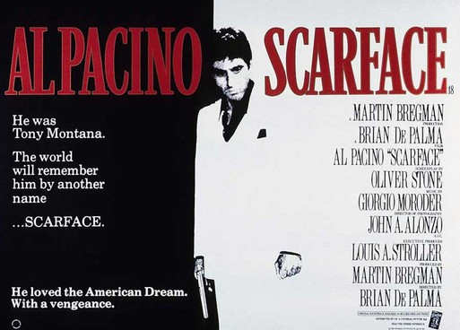
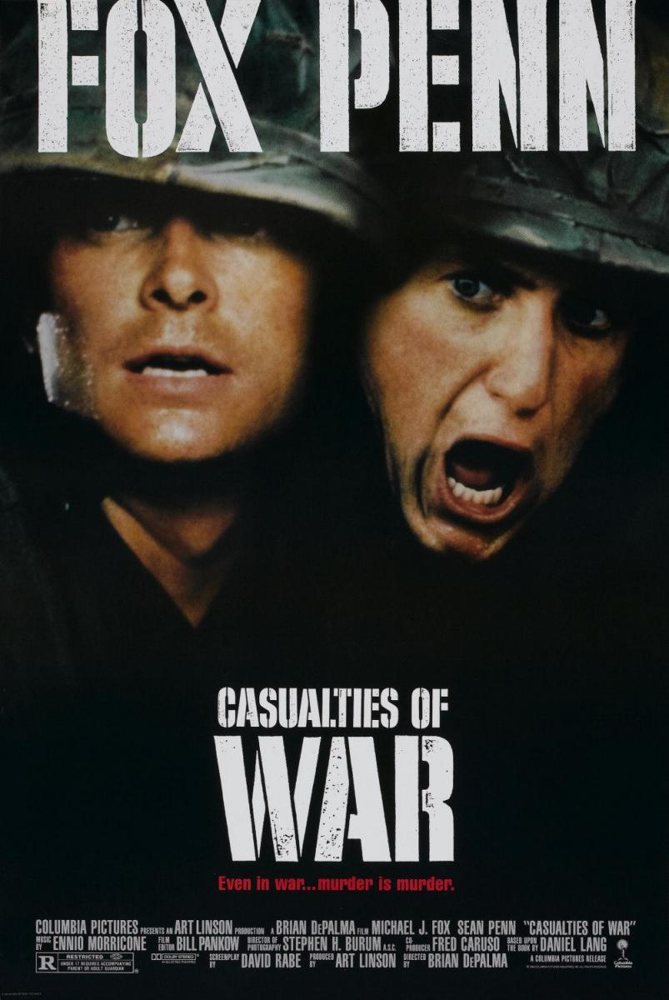
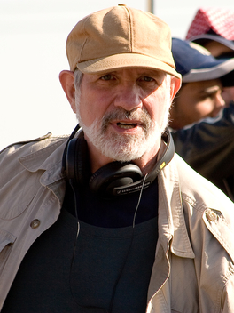

Redacted
A controversial film by Brian de Palma.
Director Brian de Palma’s film Redacted caused a stir when it was released. De Palma, whose movies aren’t for the faint hearted, was the target of the American Right and television presenters such as Fox News’ Bill O’Reilly. So, what was all the fuss about?
Brian de Palma’s best-known film is Scarface.  The film stars Al Pacino as a deranged gangster. This film is extremely violent and, in general, Brian de Palma’s films have the recurring themes of violence and the dark side of humanity. Brian de Palma got into trouble in the 1980s with feminists because of his film Dressed to Kill, and he has also been branded a traitor for his Vietnam War film Casualties of War. Redacted has similar subject matter to Casualties of War  but the reaction to the movie was much stronger. For example, the sole purpose of the website, BoycottRedacted.com was to attack the film. As a result, the film didn’t do well at the box office. In fact, when it was released in American cinemas in 2007, only 15 places showed it.
The storyline is based on the rape and murder of a 14-year-old Iraqi girl by American soldiers in 2006. The soldiers then murdered her younger sister and parents. In the film, there is a lot of violence, including the beheading of a soldier by militants, and roadside bombs. This film is not for the faint hearted. Everything in the film was based on fact. But what had changed? Americans didn’t want to see this film. Casualties of War had the same theme: a young Vietnamese girl is raped and murdered by American soldiers, but that film was quite successful. So, what was the difference? Some think that the problem was the timing of the film given that the war in Iraq was still going on. Casualties of War was released in 1989, about 15 years after the end of the Vietnam War. But it seems that people don’t want to see a film about a war that’s actually going on. But that was the point of the movie, according to De Palma. Especially as the corporate media refused to show the true picture.  The word “redacted” itself means “changed” or “edited” so that it is suitable for release.
The word “redacted” itself means “changed” or “edited” so that it is suitable for release.
The main theme of the film is the same as many other war films: war is pointless, it is brutal and it solves nothing. The soldiers themselves are poor and are manipulated by politicians. But people didn’t want to hear about that. Other films about Iraq have also flopped at the box office and the only relatively successful movie similar to it, The Kingdom, was successful because it was an action movie. Despite its dismal performance in the cinema, Brian De Palma did win a prestigious award for the film at the Venice Film Festival, the Silver Lion Award for Best Director.
It seems that many people don’t want to see true images of war, especially if it’s a war that’s still going on. This, according to De Palma, is the paradox. ✪
Brian de Palma
American film director. Born 11th September 1940 in Newark, New Jersey. Most famous films include Scarface, Dressed to Kill and Redacted.
